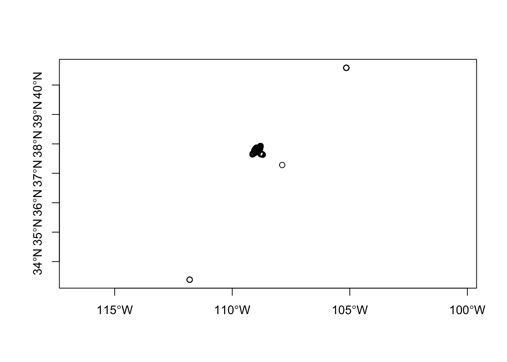
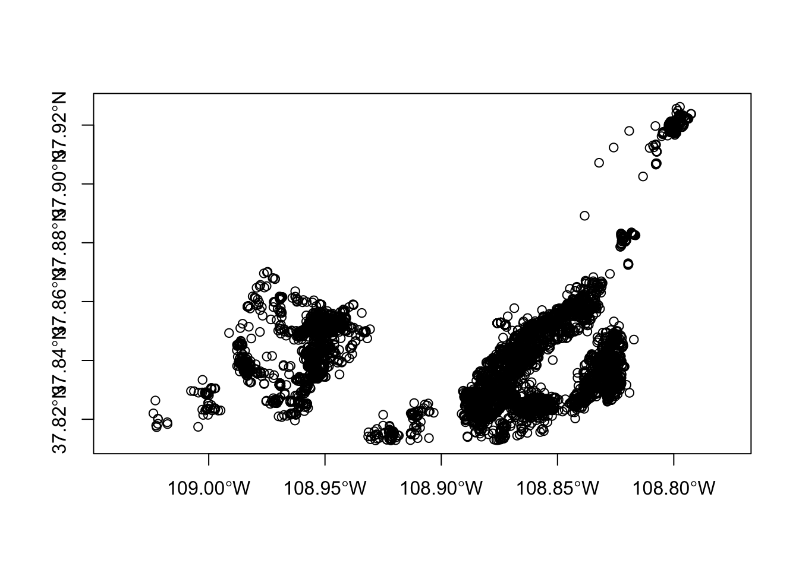
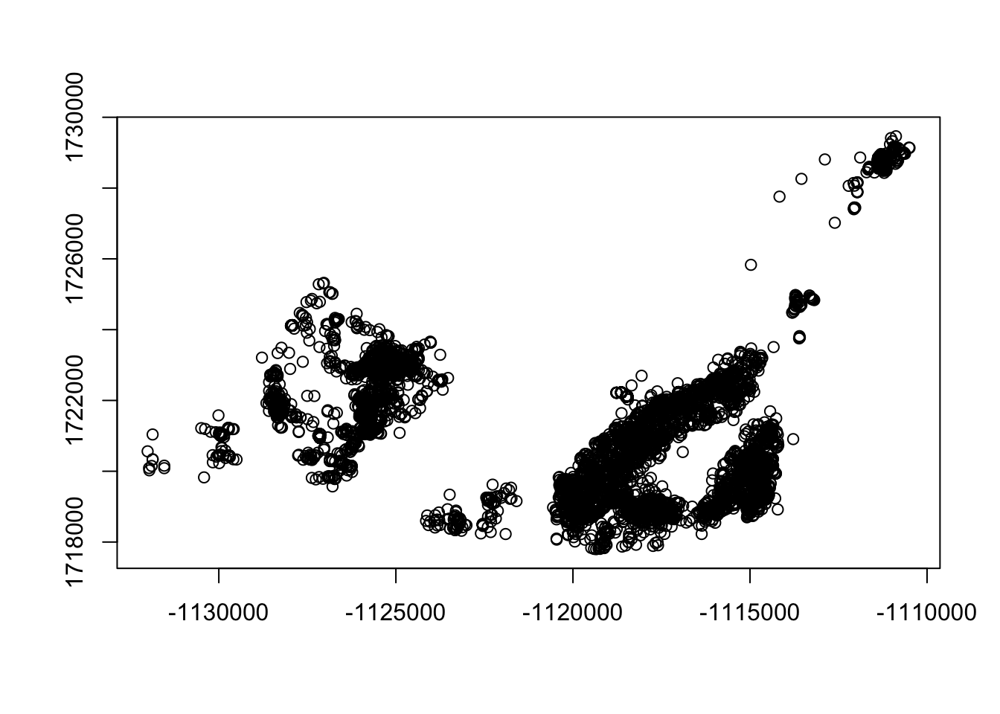

20 Net Squared Displacement
Net squared displacement (NSD) looks at the movement vectors of animals to determine their use of the landscape (Bunnefeld et al. 2011, Papworth et al. 2012). Bunnefeld et al. (2011) determined a novel method to identify movement patterns using NSD which is the straight line distance between an animals’ starting location and subsequent locations. Movements were then categorized into one of 5 categories based on the top model that describes movement for each individual. In the code for this section, we have updated the code to include the 5 movement equations along with R code provided in Papworth et al. (2012) to enable determination of migratory, mixed migratory, disperser, home range, or nomadic movement behavior. Figure 1 in Bunnefeld et al. (2011) is helpful to interpret the output of this code that identifies the pattern of NSD over time that is determined by which of the 5 movement behaviors the animal follows. Those interested in this section should read the 2 papers cited for more details and specifics of the methods.
1. Open the script “NSDScript.Rmd” and run code directly from the script
2. First we need to load the packages needed for the exercise
3. Now let’s have a separate section of code to include projection information we will use throughout the exercise. In previous versions, these lines of code were within each block of code
4. Going to be using previous mule deer dataset from Colorado and clean up the data as in previous exercises
muleys<-read.csv("data/DCmuleysedited.csv", header=T, sep=",")
muleys$NewDate<-as.POSIXct(muleys$GPSFixTime, format="%Y.%m.%d %H:%M:%S", origin="1970-01-01")
#TIME DIFF NECESSARY
timediff <- diff(muleys$NewDate)*60
# remove first entry without any difference
muleys <- muleys[-1,]
muleys$timediff <-as.numeric(abs(timediff))
summary(muleys$timediff) Min. 1st Qu. Median Mean 3rd Qu. Max.
3581 10792 10800 61399 10809 46399997 #Remove locations greater then 24 hours apart in time
muleys <- subset(muleys, muleys$timediff < 18000)
#Remove outlier locations then return to a dataframe to use later
coords <- st_as_sf(muleys, coords = c("Long", "Lat"), crs = ll.crs)
plot(st_geometry(coords),axes=T)
deer.spdf <- st_crop(coords, xmin=-107.0,xmax=-110.5,ymin=37.8,ymax=39.0)#Visually identified based on previous plot
plot(st_geometry(deer.spdf),axes=T)
muleyscoords <- as.data.frame(sf::st_coordinates(deer.spdf))
muleyscoords$Lat <- muleyscoords$X
muleyscoords$Long <- muleyscoords$Y
muleys <- as.data.frame(deer.spdf)
muleys <- cbind(st_drop_geometry(muleys),muleyscoords)
muleys <- muleys[c(-24:-25)]#get rid of duplicate lat long as X and Y
#Project deer.spdf to Albers as in previous exercise
deer.albers <-st_transform(deer.spdf, crs=albers.crs)
plot(st_geometry(deer.albers),axes=T)
5. The key to NSD is proper delineation of movement periods so we can explore a few alternatives here. First we will define deer and year based simply on the Year the location was recorded. Not very biologically meaningful but for simplicity we will start with calender year. Be sure to skip step 6 below and continue on with step 7 to the end of the exercise.
6. Alternatively, we could assign Year as when we would expect mule deer to disperse or migrate from summer to winter range. In our Colorado example, the mule deer were captured on 30 September 2011 (winter range) so we will start there and separate out a summer season from May to August using the code below. Be sure to skip step 5 above and run this step instead but do not run both.
range(muleys$NewDate)[1] "2011-10-12 00:00:34 EDT" "2012-08-31 09:00:51 EDT"muleys$Year2 <- NULL
muleys$Year2[muleys$NewDate > "2011-09-30 00:30:00" &
muleys$NewDate < "2012-03-31 23:00:00"] <- 2011
muleys$Year2[muleys$NewDate > "2012-03-31 23:59:00" &
muleys$NewDate < "2012-10-01 23:00:00"] <- 2012
muleys$Year2 <- as.factor(muleys$Year2)
muleys$YearBurst2 <- c(paste(muleys$id,muleys$Year2,sep="_"))
muleys$YearBurst2 <- as.factor(muleys$YearBurst2)
table(muleys$YearBurst2)
D12_2011 D15_2011 D15_2012 D16_2011 D16_2012 D4_2011 D6_2011 D6_2012
98 619 1178 1048 739 102 1323 84
D8_2011
956 #If needed we can remove deer that don't fit our minimum
#sample size requirement
muleys <- subset(muleys, table(muleys$YearBurst2)[muleys$YearBurst2] > 100)
muleys$YearBurst2 <- droplevels(muleys$YearBurst2)7. Next we are going to rename our dataset to simply follow along with previous code I have created unless you want to change d1 to muleys throughout. This code will separate each deer by year which will make it easier to test NSD for each deer in our study
d1 <- muleys
#Code separate each animal into a shapefile or text file to use as a "List"
#Start with making an input file
indata <- d1
innames <- unique(d1$YearBurst2)
innames <- innames[1:8]#needs to be number of unique IDs
outnames <- innames
# begin loop to calculate home ranges
for (i in 1:length(innames)){
data <- indata[which(indata$YearBurst2==innames[i]),]
if(dim(data)[1] != 0){
#data <-data[c(-21)]
# export the point data into a shp file
data.xy = data[c("X", "Y")]
coordinates(data.xy) <- ~X+Y
sppt <- SpatialPointsDataFrame(coordinates(data.xy),data)
proj4string(sppt) <- CRS(utm.crs)
#writePointsShape(sppt,fn=paste(outnames[i],sep="/"),factor2char=TRUE)
#sppt <-data[c(-22,-23)]
write.table(sppt, paste(outnames[i],"txt",sep="."), sep="\t", quote=FALSE, row.names=FALSE)
write.table(paste(outnames[i],"txt",sep="."), sep="\t", quote=FALSE, row.names=FALSE,
col.names=FALSE, "In_list.txt", append=TRUE)
#The write.table line above should only be run once to create the In_list.txt file otherwise
#it rights all animals each time
#Note: There are 3 lines of code that are not active that can #be activated to export point
#shapefiles for all resulting #animals but need to remove as.POSIX column first
}}10. Code below will be needed to get NSD and best movement model for each animal
#Reads the List file of GPS datasets
List<-read.table("In_list.txt",sep="\t",header=F)
head(List) #List contains the filenames of the all the datasets in our study
#(i.e., By YearBurst we created previoulsy)
# We will start by generating a vector of results we would like as the final
#output to our analyses
ID <- rep(0,nrow(List))
LOCS <- rep(0,nrow(List))
MIGR <- rep(0,nrow(List))
MIXM <- rep(0,nrow(List))
DISP <- rep(0,nrow(List))
HORA <- rep(0,nrow(List))
NOMA <- rep(0,nrow(List))
ID <- rep(0,nrow(List))
LOCS <- rep(0,nrow(List))
MIGR <- rep(0,nrow(List))
MIXM <- rep(0,nrow(List))
DISP <- rep(0,nrow(List))
HORA <- rep(0,nrow(List))
NOMA <- rep(0,nrow(List))
AICC_1 <- rep(0,nrow(List))
AICC_2 <- rep(0,nrow(List))
AICC_3 <- rep(0,nrow(List))
AICC_4 <- rep(0,nrow(List))
AICC_5 <- rep(0,nrow(List))
minAIC <- rep(0,nrow(List))
d_AICC_1 <- rep(0,nrow(List))
d_AICC_2 <- rep(0,nrow(List))
d_AICC_3 <- rep(0,nrow(List))
d_AICC_4 <- rep(0,nrow(List))
d_AICC_5 <- rep(0,nrow(List))
LL_AICC_1 <- rep(0,nrow(List))
LL_AICC_2 <- rep(0,nrow(List))
LL_AICC_3 <- rep(0,nrow(List))
LL_AICC_4 <- rep(0,nrow(List))
LL_AICC_5 <- rep(0,nrow(List))
sumLL_AICC <- rep(0,nrow(List))
wi_AICC_1 <- rep(0,nrow(List))
wi_AICC_2 <- rep(0,nrow(List))
wi_AICC_3 <- rep(0,nrow(List))
wi_AICC_4 <- rep(0,nrow(List))
wi_AICC_5 <- rep(0,nrow(List))11. The remainder of the code will be within a loop to run all animals in our dataset individually. The vector above will be populated with our results each time an animal has finished running through all the code
for(i in 1:nrow(List)) {
coords<-read.table(as.character(List[i,]),sep="\t",header=T)
coords$DT<-as.POSIXct(coords$NewDate, format="%Y-%m-%d %H:%M:%S")
##Make a data.frame of coordinates. Here the raw values are divided
#by 1000 so that trajectories are calculated using km as the unit of measurement not meters
coord<-data.frame((coords$Y),(coords$X))
#Make ltraj: a trajectory of all the relocations
d2<-as.ltraj(coord,coords$DT,
coords$YearBurst2, #separate your data by individual.
burst=coords$YearBurst2, #burst is used to create subdivisions within an individual.
typeII=TRUE)
#you can now make your trajectory regular
#first, create a reference start time
#refda <- strptime("00:00", "%H:%M") #all relocations should be altered
#to occur at 30 seconds past each minute
#firstly create a reference start time
refda <- strptime("00:00:30", "%H:%M:%S")
#you can now make your trajectory regular, as radio tracks tend to lose
#a few seconds / minutes with each relocation
#firstly add "NA" for each missing location in your trajectory
d3<-setNA(d2,refda,
#as.POSIXct("2007-06-01 06:00:00 EDT"), #any time before earliest timedate
10800, #stating there should be a location every 3 hours
tol=10800, #how many time units to search each side of expected location
units="sec") #specifying the time units
#you can now make your trajectory regular
#NOTE: The refda and d3 code above was not run as in Papworth because
#it results in too many relocations as "NA" that get removed below. Not
#quite sure the reason behind it being included?
#You can now make your trajectory regular
d4<-sett0(d3, refda,
10800, #stating the interval at which relocations should be
correction.xy =c("none"), #if "cs" performs location correction based on the
#assumption the individual moves at a constant speed
tol=10800, #how many time units to search either side of an expected location
units = "sec") #specifying the time units
#to view your regular trajectory of points with NA's
summary(d4)
#now calculating NSD for each point
datansd<-NULL
for(n in 1:length(summary(d4)[,1])) #stating that NSD should be
#calculated separately for each burst
{
nsdall<-d4[[n]][,8] #extracting the NSD for each location
nsdtimeall<-d4[[n]][,3] #extracting the time for each location
nsdtimestartzero<-d4[[n]][,3]-d4[[n]][1,3]
#extracting the time since trip start for each location
nsdid<-rep(as.vector(summary(d4)[n,1]),
length.out=summary(d4)[n,3])
#extracting the individual associated with each location
nsdtrip<-rep(as.vector(summary(d4)[n,2]),length.out=summary(d4)[n,3])
#extracting the trip associated with each location
datansd1<-data.frame(nsdall,nsdtimeall,nsdtimestartzero,nsdid,nsdtrip)
#joining all these variables together in a data frame
datansd<-rbind(datansd,datansd1)
#joining all the data frames together
}
datansd$zero1<-as.numeric(unclass(datansd$nsdtimestartzero))
# making seconds since trip start numeric
datansd$zerostart<-datansd$zero1/60
#changing the time since trip start from seconds to minutes
datansd$minslitr2<-as.numeric(strftime(as.POSIXlt(datansd$nsdtimeall),
format="%M"))
#making a vector of the hour of the day a location occured
datansd$hdaylitr2<-as.numeric(strftime(as.POSIXlt(datansd$nsdtimeall),
format="%H"))
#making a vector of the minute in an hour a location occured
datansd$minsday<-((datansd$hdaylitr2*60)+datansd$minslitr2)
#calculating the minute in the day a location occured
summary(datansd)
datansd1<-na.omit(datansd) #remove NA's
datansd1$coordinates<-coord #add the coordinates for each point
#you now have the dataframe you need (datansd) to start analysis
#NSD
#table(datansd1$nsdid)
#Now you can start modelling NSD using nlme.
#Equations are from Bunnefeld at al (2011) A model-driven approach to quantify migration
#patterns:individual, regional and yearly differences.
#Journal of Animal Ecology 80:466-476
#First we are going to model the data using nls, a least squares method,
#the simplest method and first method in Bunnefeld et al. 2011 (i.e., MIGRATION)
#that uses a double sigmoid or s-shaped function.
###########################
##
## MIGRATION
##
###########################
m1<-tryCatch(nls(nsdall ~ asym /(1+exp((xmidA-zerostart)/scale1)) +
(-asym / (1 + exp((xmidB-zerostart)/scale2))), #Equation 1 in Bunnefeld et al. 2011
start = c(asym=15000000,xmidA=200000,xmidB=450000,scale1=1000,scale2=1000)
#these are the starting values for each parameter of the equation
,data=na.omit(datansd1)),error=function(e)99999) #this is the data
#summary(m1) #this will print a summary of the converged model
#NOTE: The error function is simply to prevent the loop from crashing
#if model does not converge
###########################
##
## MIXED MIGRATORY
##
###########################
m2 <-tryCatch(nls(nsdall ~ asymA /(1+exp((xmidA-zerostart)/scale1)) +
(-asymB / (1 + exp((xmidB-zerostart)/scale2))), #Equation 2 in Bunnefeld et al. 2011
start = c(asymA=15000000,asymB=10000000, xmidA=200000,xmidB=450000,scale1=1000,scale2=1000)
#these are the starting values for each parameter of the equation
,data=na.omit(datansd1)),error=function(e)99999) #this is the data
#summary(m2)
###########################
##
## DISPERSAL
##
###########################
m3 <-tryCatch(nls(nsdall ~ asym /(1+exp((xmid-zerostart)/scale)),
start = c(asym=15000000,xmid=200000,scale=1000)#Equation 3 in Bunnefeld et al. 2011
#these are the starting values for each parameter of the equation
,data=na.omit(datansd1)),error=function(e)99999) #this is the data
#summary(m3)
###########################
##
## HOME RANGE
##
###########################
m4 <- tryCatch(nls(nsdall ~ intercept, data=na.omit(datansd1),start = list(intercept = 0)),
error=function(e)99999) #Equation 4 in Bunnefeld et al. 2011
#where c is a constant
#summary(m4)
###########################
##
## NOMADIC
##
###########################
m5 <- tryCatch(nls(nsdall ~ beta*zerostart,start=c(beta=1), data=na.omit(datansd1)),
error=function(e)99999) #Equation 5 in Bunnefeld et al. 2011 where beta is a constant
#and t the number of days since initial start date (i.e., 1 June of each year)
#summary(m5)
#Below we are going to set up the AIC table
ID[i] <- paste(unique(as.factor(datansd$nsdid)))
LOCS[i] <- nrow(coords)
MIGR[i] <- print(tryCatch(AIC(m1),error=function(e)0))
MIXM[i] <- print(tryCatch(AIC(m2),error=function(e)0))
DISP[i] <- print(tryCatch(AIC(m3),error=function(e)0))
HORA[i] <- print(tryCatch(AIC(m4),error=function(e)0))
NOMA[i] <- print(tryCatch(AIC(m5),error=function(e)0))
AICC_1[i] <- print(tryCatch(AIC(m1),error=function(e)99999))
AICC_2[i] <- print(tryCatch(AIC(m2),error=function(e)99999))
AICC_3[i] <- print(tryCatch(AIC(m3),error=function(e)99999))
AICC_4[i] <- print(tryCatch(AIC(m4),error=function(e)99999))
AICC_5[i] <- print(tryCatch(AIC(m5),error=function(e)99999))
minAIC[i] <- min(AICC_1[i],AICC_2[i],AICC_3[i],AICC_4[i],AICC_5[i])
d_AICC_1[i] <- (AICC_1[i] - minAIC[i])
d_AICC_2[i] <- (AICC_2[i] - minAIC[i])
d_AICC_3[i] <- (AICC_3[i] - minAIC[i])
d_AICC_4[i] <- (AICC_4[i] - minAIC[i])
d_AICC_5[i] <- (AICC_5[i] - minAIC[i])
LL_AICC_1[i] <- exp(-0.5*d_AICC_1[i])
LL_AICC_2[i] <- exp(-0.5*d_AICC_2[i])
LL_AICC_3[i] <- exp(-0.5*d_AICC_3[i])
LL_AICC_4[i] <- exp(-0.5*d_AICC_4[i])
LL_AICC_5[i] <- exp(-0.5*d_AICC_5[i])
sumLL_AICC[i] <- sum(LL_AICC_1[i],LL_AICC_2[i],LL_AICC_3[i],LL_AICC_4[i],LL_AICC_5[i])
wi_AICC_1[i] <- LL_AICC_1[i]/sumLL_AICC[i]
wi_AICC_2[i] <- LL_AICC_2[i]/sumLL_AICC[i]
wi_AICC_3[i] <- LL_AICC_3[i]/sumLL_AICC[i]
wi_AICC_4[i] <- LL_AICC_4[i]/sumLL_AICC[i]
wi_AICC_5[i] <- LL_AICC_5[i]/sumLL_AICC[i]
filename<-paste(substr(List[i,],1,8),"png",sep=".")
#NOTE:Numbers after "List[i,] need to encompass possible lengths of output name
#(i.e., D19.txt is 6 characters)
png(filename,height=20,width=30,units="cm",res=600)
#graphical exploration of the data will help you find sensible starting values
#for each of the parameters asym, xmidA, xmidB, scale1 and scale2.
#to graph nsd against time, use:
xyplot(nsdall~zerostart|nsdtrip,data=datansd)
#str(nsdtest)
#now plot the data with the predicted curve
nsdplot <- xyplot(nsdall ~ zerostart/3600, data=datansd1,
col="grey", #color for the observed locations
type='b', # 'b' shows the locations as dots, with a line connecting
#successive locations. Can also be 'p' for just the locations, or 'l' for just
#the line between locations
ylab=expression(paste('Net squared displacement ',' ', (km^2))), #y axis label
xlab="Hours after trip start")
plot(nsdplot)
dev.off()
}
#Create table of AIC values with lower AIC identifying best model
RESULT<-cbind(ID,LOCS,MIGR,MIXM,DISP,HORA,NOMA)
colnames(RESULT)<- c("ID","LOCS","MIGR","MIXM","DISP","HORA","NOMA")
#write.table(RESULT,"OUT_NSDresults.txt",sep="\t")
#Create table of raw values to calculate AICweights
Migratory <- rbind(ID,AICC_1,d_AICC_1,LL_AICC_1,wi_AICC_1)
MixedMig <- rbind(ID,AICC_2,d_AICC_2,LL_AICC_2,wi_AICC_2)
Disperser <- rbind(ID,AICC_3,d_AICC_3,LL_AICC_3,wi_AICC_3)
HomeRange <- rbind(ID,AICC_4,d_AICC_4,LL_AICC_4,wi_AICC_4)
Nomadic <- rbind(ID,AICC_5,d_AICC_5,LL_AICC_5,wi_AICC_5)
RESULT2 <- rbind(Migratory,MixedMig,Disperser,HomeRange,Nomadic)
write.csv(RESULT2,"OUT_NSDresults.csv")